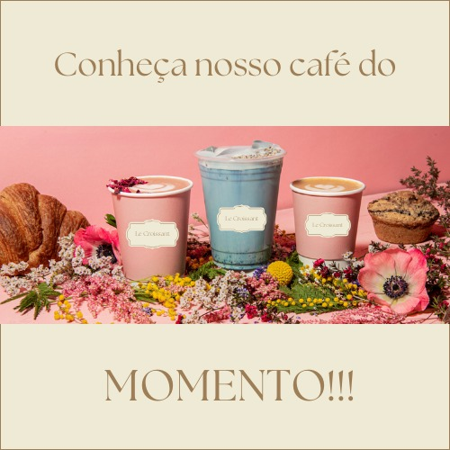
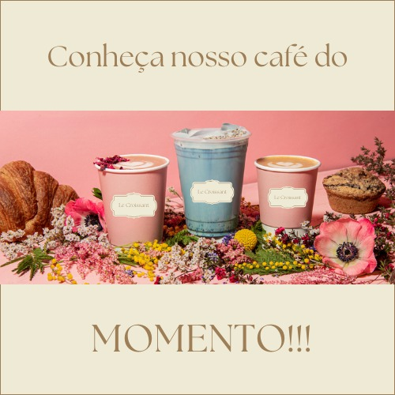

A cafeteria Le Croissant é inspirada na gastronomia francesa. Oferece café da manhã, brunch e café da tarde, com comidas leves e gourmet. Com o estilo e gastronomia francesas unido ao toque caseiro e retrô de nosso ambiente, buscamos apresentar o melhor produto aos nossos clientes, compartilhando nossa paixão pelo que fazemos
 
